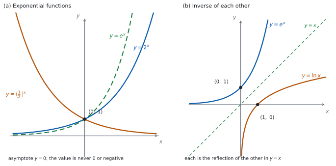
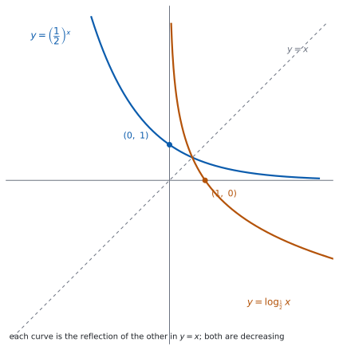

SL 2.9 — Exponential and logarithmic functions（指数関数と対数関数）
- exponential function（指数関数）\(f(x) = a^{x}\)（\(a > 0\)）のグラフがかける。
- \(f(x) = e^{x}\) の \(e\) が、\(2.718\ldots\) という無理数の定数だと知っている。
- logarithmic function（対数関数）\(f(x) = \log_{a} x\)（\(x > 0\)）と \(f(x) = \ln x\) のグラフがかける。
- どちらも domain・range・漸近線・軸との交点が書ける。
- 指数と対数が互いに逆関数だと分かり、\(\log_{a} a^{x} = x\) が使える。
- \(a^{x} = e^{x \ln a}\) で、底を \(e\) にそろえられる。
The idea
1. 指数関数 \(f(x) = a^{x}\)
\[ f(x) = a^{x}, \qquad a > 0 \tag{1}\]
底（base）\(a\) は正とします。負の底では、\(a^{\frac{1}{2}}\) のような値が実数になりません。さらに、ここから先は \(a \neq 1\) とします。 \(a = 1\) だと \(1^{x} = 1\) で、グラフは水平な直線になり、range は \(y = 1\) の \(1\) 点だけ、漸近線もありません。公式集（第 4 節）も \(a \neq 1\) を付けています。
図 1 の (a) が、そのグラフです。\(y = 2^{x}\) と \(y = \left(\dfrac{1}{2}\right)^{x}\) を見てください。
- domain は実数全体。どんな \(x\) でも \(a^{x}\) の値があります。
- range は \(y > 0\)。\(a^{x}\) は決して \(0\) にも負にもなりません。
- \(y = 0\) が水平漸近線（horizontal asymptote）です。
- どの指数関数も \((0, 1)\) を通ります。 \(a^{0} = 1\) だからです。
- \(a > 1\) なら右上がり（増える）、\(0 < a < 1\) なら右下がり（減る）。
2. \(e\) と \(f(x) = e^{x}\)
\[ e = 2.718281\ldots \]
\(e\) は \(\pi\) と同じ irrational number（無理数）です。小数で書くと終わりがなく、同じ並びのくり返しにもならないので、分数 \(\dfrac{p}{q}\) の形には書けません。 だから \(2.718\) と書いたら、それは \(e\) そのものではなく近い値です。
\(f(x) = e^{x}\) を natural exponential function（自然指数関数）といいます。\(e > 1\) なので、グラフは右上がりです。図 1 の (a) の点線が \(y = e^{x}\) で、\(y = 2^{x}\) と同じ形の仲間だと分かります。
\(e\) は数です。答案に \(e^{3}\) と書けば、それが正確な値（exact value）です。\(20.0855\ldots\) と書き直す必要はありません。
Find the exact value と言われたら、\(e\) や \(\ln\) を残したまま答えます。
3. 対数関数 \(f(x) = \log_{a} x\)
\[ f(x) = \log_{a} x, \qquad x > 0 \tag{2}\]
ここで底 \(a\) は \(a > 0\)、\(a \neq 1\) とします。\(a = 1\) では \(1^{y}\) がいつも \(1\) なので、「\(1\) を何乗したら \(x\) になるか」に答えられず、対数が決められません。
\(\log\) の中身（真数）は正でなければなりません（第 7 節）。
- domain は \(x > 0\)。
- range は実数全体。
- \(x = 0\) が垂直漸近線（vertical asymptote）です。
- どの対数関数も \((1, 0)\) を通ります。 \(\log_{a} 1 = 0\) だからです。
\(\log_{e} x\) は特別に \(\ln x\) と書き、natural logarithm（自然対数）といいます。\(\log_{10} x\) は \(\log x\) と書かれることもありますが、答案では底を書いた方が安全です。
4. 指数と対数は、互いに逆関数
\[ a^{x} = b \iff \log_{a} b = x \tag{3}\]
公式集の 1.5 の欄に Exponents and logarithms として印刷されています。
\(a^{x} = b \Leftrightarrow \log_{a}b = x\), where \(a > 0, b > 0, a \neq 1\)
条件も一緒に印刷されています。 底は正で \(1\) ではなく、真数（\(\log\) の中身）も正です。
たとえば \(10^{3} = 1000\) なので、\(\log_{10} 1000 = 3\) です。同じ事実の \(2\) とおりの書き方にすぎません。
「互いに逆関数」なので、続けてはたらかせるともとに戻ります（SL 2.5）。
\[ \log_{a} a^{x} = x, \qquad a^{\log_{a} x} = x \tag{4}\]
左の式はどんな実数 \(x\) でも成り立ちますが、右の式は \(x > 0\) のときだけです（\(x \le 0\) では \(\log_{a} x\) に値がないので、式そのものが書けません）。とくに \(\ln e^{x} = x\)（\(x\) は実数全体）、\(e^{\ln x} = x\)（\(x > 0\)）です。
グラフで見ると、図 1 の (b) のように \(y = x\) について互いの折り返しになります。\(y = e^{x}\) が \((0, 1)\) を通り、\(y = \ln x\) が \((1, 0)\) を通るのも、そのためです。
| \(y = a^{x}\) | \(y = \log_{a} x\) | |
|---|---|---|
| domain | 実数全体 | \(x > 0\) |
| range | \(y > 0\) | 実数全体 |
| 漸近線 | \(y = 0\)（水平） | \(x = 0\)（垂直） |
| 通る点 | \((0, 1)\) | \((1, 0)\) |
表の左右が、ちょうど入れかわっています。 逆関数どうしなので、domain と range が入れかわります。
5. 底を \(e\) にそろえる
\[ a^{x} = e^{x \ln a} \tag{5}\]
公式集の 1.7 の欄に、Exponents and logarithms の \(1\) つとして印刷されています。
\(a^{x} = e^{x\ln a}\)
どんな指数関数も、底 \(e\) で書き直せます。 微分（Topic 5）で \(e^{x}\) だけを扱えばよくなるので、あとで効いてきます。
たとえば \(4^{x} = e^{x \ln 4}\) です。\(x\) に \(\ln 4\) がかかるのであって、\(e^{4x}\) ではありません。
6. グラフから読むこと
sketch を求められたら、次を必ず入れます。
- 漸近線（指数なら \(y = 0\)、対数なら \(x = 0\)）を点線でかき、式を書く。
- 軸との交点（指数なら \((0, 1)\)、対数なら \((1, 0)\)）に点を打ち、座標を書く。
- 増えるか減るかが分かる形にかく。
グラフは漸近線にいくら近づいても触れません。指数関数のグラフは \(x\) 軸と、対数関数のグラフは \(y\) 軸と、交わらないようにかいてください。
TI-Nspire CX II の Calculator 画面では、\(e^{\square}\) と \(\log_{\square}\square\) をテンプレートで入れます。キーの位置は機種と OS のバージョンでちがうので、自分の機械で一度たしかめておいてください。 \(\ln\) は ln( と打っても入ります。log( を底なしで使うと、底 \(10\) になります。
Graphs 画面にかくと、対数関数は \(x \le 0\) の側に何も出ません。画面に出ないのは「エラー」ではなく、domain の外だからです。
Paper 1 では使えません。 このページの例題と演習は、すべて手で解ける形にしてあります。
7. 気をつける \(3\) つのこと
\(\log_{a} 0\) も \(\log_{a}(-3)\) も、実数の範囲では定義されません。\(a^{y}\) が \(0\) や負にならないからです。
「値が \(0\)」ではなく「値がない」です。答案には undefined と書きます。
\(a > 0\) なら、\(x\) が何でも \(a^{x} > 0\) です。\(a > 1\) のときは、\(x\) が大きな負の数になると \(0\) に近づくだけで、\(0\) にはなりません。\(0 < a < 1\) のときは、\(x\) を大きくしていくと同じことが起こります。
だから range は \(y > 0\) で、\(y \ge 0\) ではありません。
足し算が対数の中にあるときは、何も外に出せません。外に出せるのは、かけ算・割り算・累乗のときだけです（SL 1.7b）。
\(\log_{a}(xy) = \log_{a} x + \log_{a} y\) とは、まったくちがう式です。

Why it works
なぜ、\(a^{x}\) は決して \(0\) や負にならないのでしょうか。
\(a > 0\) とします。\(x\) が正の整数なら、\(a^{x}\) は正の数どうしのかけ算なので正です。\(a^{0} = 1\) も正です。\(x\) が負なら \(a^{x} = \dfrac{1}{a^{-x}}\) で、正の数の逆数だからやはり正です。分数の指数なら \(a^{\frac{p}{q}} = \left(\sqrt[q]{a}\right)^{p}\) で、正の数の累乗根も正なので、これも正です。ここまでで、指数が有理数のときは正だと分かりました。
無理数の指数でも、\(a > 0\) なら \(a^{x} > 0\) が成り立ちます。 \(x\) が \(\sqrt{2}\) のような無理数のときに \(a^{x}\) をどう定めるかは、ここでは扱いません。
では、なぜ \(y = 0\) が水平漸近線なのでしょうか。 \(0\) にならないだけでは足りません。\(0\) にいくらでも近づくことも要ります。\(a > 1\) とし、\(x = -m\)（\(m\) は正の整数）を入れると \(a^{-m} = \dfrac{1}{a^{m}}\) です。\(a^{m}\) は \(m\) を大きくするといくらでも大きくなるので、\(a^{-m}\) はいくらでも \(0\) に近づきます。正のままで、いくらでも近づく。だから \(y = 0\) が水平漸近線です。\(0 < a < 1\) のときは、\(x\) を大きくすると同じことが起こります。
なぜ、\(\log\) の中身は正でなければならないのでしょうか。 \(\log_{a} b\) は「\(a\) を何乗したら \(b\) になるか」という数でした（式 3）。ところが上で見たとおり、\(a^{x}\) はいつも正です。\(b\) が \(0\) や負なら、そんな \(x\) は存在しません。 だから値がないのです。
なぜ、\(2\) つのグラフが \(y = x\) について対称なのでしょうか。 逆関数のグラフは、もとのグラフの \(x\) と \(y\) を入れかえたものでした（SL 2.5）。点 \((p, q)\) と点 \((q, p)\) は、直線 \(y = x\) について対称です。だからグラフ全体も対称になります。
これで 表 1 の左右の入れかわりも説明がつきます。domain と range も、\(x\) と \(y\) の入れかえで交換されるからです。
なぜ、\(a^{x} = e^{x \ln a}\) なのでしょうか。 \(e^{\ln a} = a\) です（式 4）。両辺を \(x\) 乗すると
\[ \left(e^{\ln a}\right)^{x} = a^{x} \]
で、左辺は指数法則から \(e^{x \ln a}\) です。\(\ln a\) という「かけ算の相手」を作るのが、この式の役目です。
Worked examples
問題文は英語です。意味が理解できなかったら、問題文の下の「日本語訳」を開いてください。解説は日本語です。
例題も演習も、すべて電卓なしで解けます。 Paper 1 のつもりで解いてください。
例題 1 Let \(f(x) = 3^{x}\).
(a) Write down the value of \(f(0)\).
(b) Write down the equation of the horizontal asymptote of the graph of \(f\).
(c) Write down the range of \(f\).
(d) Explain why the graph of \(f\) never meets the \(x\)-axis.
日本語訳
\(f(x) = 3^{x}\) とします。
(a) \(f(0)\) の値を書きなさい。
(b) \(f\) のグラフの水平漸近線の式を書きなさい。
(c) \(f\) の range を書きなさい。
(d) \(f\) のグラフが \(x\) 軸と出会わない理由を説明しなさい。
(a) \(0\) 乗はいつも \(1\) です（第 1 節）。
\[ f(0) = 1 \]
(b) \(x\) が小さくなると \(0\) に近づきます。
\[ y = 0 \]
(c) \(3^{x}\) は正の値だけをとります。
\[ y > 0 \]
(d) Explain why なので、英語で理由を書きます。
試験ではこう書く
The graph meets the \(x\)-axis where \(3^{x} = 0\). Since \(3 > 0\), every power of \(3\) is positive: for \(x < 0\) we have \(3^{x} = \dfrac{1}{3^{-x}}\), the reciprocal of a positive number. So \(3^{x} = 0\) has no solution and the graph never meets the axis.
（グラフが \(x\) 軸と出会うのは \(3^{x} = 0\) のときである。\(3 > 0\) なので \(3\) の累乗はつねに正である。\(x < 0\) のときは \(3^{x} = \dfrac{1}{3^{-x}}\) で、正の数の逆数だからである。よって \(3^{x} = 0\) に解はなく、グラフは軸と出会わない、という意味です。\(x\) が大きな負の数のとき、いくらでも近づきはします。）
検算（(a) について）。 指数法則から出し直します。 \(3^{1} \times 3^{-1} = 3^{1-1} = 3^{0}\) です。左辺は \(3 \times \dfrac{1}{3} = 1\) なので \(3^{0} = 1\)、つまり \(f(0) = 1\) ✓ 「\(0\) 乗は \(1\)」を覚えていなくても出せます。
検算（(b) について）。 小さい \(x\) で値を見ます。 \(f(-1) = \dfrac{1}{3}\)、\(f(-2) = \dfrac{1}{9}\)、\(f(-5) = \dfrac{1}{243}\) です ✓ どれも正のままで、\(0\) に近づいています。
検算（(c) について）。 \(y \ge 0\) としていないかを見ます。 \(3^{x} = 0\) を解こうとして両辺に \(3^{-x}\) をかけると \(1 = 0\) になり、成り立ちません ✓ \(0\) は range に入りません。
(a) \[f(0) = 1\]
(b) \[y = 0\]
(c) \[y > 0\]
(d) \(3^{x} = 0\) has no solution because every power of a positive number is positive, so the graph never meets the axis.
例題 2 Let \(g(x) = \ln x\).
(a) Write down the domain of \(g\).
(b) Write down the equation of the vertical asymptote of the graph of \(g\).
(c) Find the exact value of \(x\) for which \(g(x) = 2\).
(d) A student writes \(\ln(-e) = -1\). Comment on this statement.
日本語訳
\(g(x) = \ln x\) とします。
(a) \(g\) の domain を書きなさい。
(b) \(g\) のグラフの垂直漸近線の式を書きなさい。
(c) \(g(x) = 2\) となる \(x\) の正確な値を求めなさい。
(d) ある生徒が \(\ln(-e) = -1\) と書きました。この発言について述べなさい。
(a) \(\log\) の中身は正です（第 3 節）。
\[ x > 0 \]
(b) \(x\) が \(0\) に近づくと、値はいくらでも小さくなります。
\[ x = 0 \]
(c) 式 3 を使います。\(\ln x = 2\) は \(e^{2} = x\) と同じことです。
\[ x = e^{2} \]
(d) Comment on なので、英語で判断とその理由を書きます。
試験ではこう書く
The statement is not correct. The expression \(\ln(-e)\) has no value, because the domain of \(\ln\) is \(x > 0\) and \(-e\) is negative. There is no real number \(y\) with \(e^{y} = -e\), since every power of \(e\) is positive. The student has probably moved the minus sign out of the logarithm, but \(\ln(-x)\) is not \(-\ln x\).
（この発言は正しくない。\(\ln\) の domain は \(x > 0\) で、\(-e\) は負なので、\(\ln(-e)\) には値がない。\(e\) の累乗はつねに正なので、\(e^{y} = -e\) となる実数 \(y\) は存在しない。この生徒はおそらくマイナスを対数の外に出したのだろうが、\(\ln(-x)\) は \(-\ln x\) ではない、という意味です。）
検算（(a) について）。 \(1\) より小さい正の数でも値があるかを見ます。 \(x = \dfrac{1}{e}\) を入れると \(g\!\left(\dfrac{1}{e}\right) = \ln e^{-1} = -1\) で、ちゃんと値があります ✓ domain は \(x > 1\) でも \(x \ge 1\) でもなく、\(0\) より大きければ入ると確かめられました。
検算（(b) について）。 \(0\) に近い値を入れます。 \(x = e^{-5}\) なら \(g(x) = -5\)、\(x = e^{-10}\) なら \(-10\) です ✓ \(x\) が \(0\) に近づくほど、値がどこまでも小さくなっています。
検算（(c) について）。 もとの式に入れ直します。 \(\ln e^{2} = 2\) です（式 4）✓ 求めた値がたしかに \(2\) を返しました。
検算（(d) について）。 その生徒が出したかった値と見くらべます。 \(\ln x = -1\) になるのは \(x = e^{-1} = \dfrac{1}{e}\) で、これは正の数です ✓ \(-1\) が出るのは \(\dfrac{1}{e}\) のときであって、\(-e\) のときではありません。
(a) \[x > 0\]
(b) \[x = 0\]
(c) \(\ln x = 2\) means \(e^{2} = x\) \[x = e^{2}\]
(d) Not correct: \(\ln(-e)\) is undefined, since the domain of \(\ln\) is \(x > 0\) and no power of \(e\) is negative.
例題 3 Let \(f(x) = e^{x}\) and let \(h(x) = \ln x\), for \(x > 0\).
(a) Show that \(f(h(x)) = x\) for all \(x > 0\).
(b) Write down \(f^{-1}(x)\) and state its domain.
(c) The graph of \(y = f(x)\) passes through \((0, 1)\). Write down the coordinates of the corresponding point on the graph of \(y = f^{-1}(x)\).
(d) Explain why the graph of \(y = f^{-1}(x)\) is the reflection of the graph of \(y = f(x)\) in the line \(y = x\).
日本語訳
\(f(x) = e^{x}\) とし、\(x > 0\) について \(h(x) = \ln x\) とします。
(a) \(x > 0\) のすべてで \(f(h(x)) = x\) であることを示しなさい。
(b) \(f^{-1}(x)\) を書き、その domain を述べなさい。
(c) \(y = f(x)\) のグラフは \((0, 1)\) を通ります。\(y = f^{-1}(x)\) のグラフ上の、対応する点の座標を書きなさい。
(d) \(y = f^{-1}(x)\) のグラフが、\(y = f(x)\) のグラフを直線 \(y = x\) について折り返したものになる理由を説明しなさい。
(a) Show that なので、代入の過程を書いて見せます。
\[ f(h(x)) = f(\ln x) = e^{\ln x} = x \]
最後の等号が 式 4 です。
(b) (a) で \(f(h(x)) = x\)、下の検算で \(h(f(x)) = x\) が確かめられます。両方の向きでもとに戻るので、\(h\) が \(f\) の逆関数です。
\[ f^{-1}(x) = \ln x, \qquad x > 0 \]
(c) 逆関数では、座標が入れかわります（SL 2.5）。
\[ (1, \ 0) \]
(d) Explain なので、英語で書きます。
試験ではこう書く
If the point \((p, q)\) lies on \(y = f(x)\), then \(f(p) = q\), so \(f^{-1}(q) = p\) and the point \((q, p)\) lies on \(y = f^{-1}(x)\). Swapping the coordinates of a point reflects it in the line \(y = x\), so doing this to every point reflects the whole graph.
（点 \((p, q)\) が \(y = f(x)\) 上にあれば \(f(p) = q\) なので \(f^{-1}(q) = p\) となり、点 \((q, p)\) が \(y = f^{-1}(x)\) 上にある。点の座標を入れかえることは、その点を \(y = x\) について折り返すことなので、すべての点にそうすればグラフ全体が折り返される、という意味です。）
検算（(a) について）。 逆向きの合成も見ます。 \(h(f(x)) = \ln e^{x} = x\) です ✓ 両方の向きでもとに戻るので、たしかに逆関数どうしです。
検算（(b) について）。 domain と range が入れかわっているかを見ます。 \(f\) の domain は実数全体、range は \(y > 0\)。\(f^{-1}\) の domain は \(x > 0\)、range は実数全体です ✓ 表 1 と合っています。
検算（(c) について）。 入れかえた点が、本当に \(y = \ln x\) 上にあるかを見ます。 \(\ln 1 = 0\) です ✓ \((1, 0)\) は \(y = \ln x\) 上の点です。
(a) \[f(h(x)) = e^{\ln x} = x\]
(b) \[f^{-1}(x) = \ln x, \qquad x > 0\]
(c) \[(1, \ 0)\]
(d) Each graph is the reflection of the other in the line \(y = x\), because \((p, q)\) on one graph corresponds to \((q, p)\) on the other.
例題 4 In this question, give all answers in exact form.
(a) Write \(5^{x}\) in the form \(e^{kx}\), giving the exact value of \(k\).
(b) A student writes \(2^{x} = e^{2x}\). Identify the error, and write down the correct form.
(c) Find the value of \(\log_{3} 81\).
(d) Explain why \(\log_{a} 1 = 0\) for every \(a > 0\) with \(a \neq 1\).
日本語訳
この問題では、答えをすべて正確な形で書きなさい。
(a) \(5^{x}\) を \(e^{kx}\) の形で書き、\(k\) の正確な値を書きなさい。
(b) ある生徒が \(2^{x} = e^{2x}\) と書きました。誤りを指摘し、正しい形を書きなさい。
(c) \(\log_{3} 81\) の値を求めなさい。
(d) \(a > 0\)、\(a \neq 1\) のどんな \(a\) でも \(\log_{a} 1 = 0\) になる理由を説明しなさい。
(a) 式 5 をそのまま使います。
\[ 5^{x} = e^{x \ln 5}, \qquad k = \ln 5 \]
(b) Identify the error なので、英語でどこが違うかを書いてから、正しい形を書きます。
試験ではこう書く
The formula is \(a^{x} = e^{x\ln a}\), so \(x\) is multiplied by \(\ln a\), not by \(a\). Since \(\ln 2 \neq 2\) the statement is false: at \(x = 1\) the two sides are \(2\) and \(e^{2}\). The correct form is \(2^{x} = e^{x \ln 2}\).
（公式は \(a^{x} = e^{x\ln a}\) なので、\(x\) にかけるのは \(\ln a\) であって \(a\) ではない。\(\ln 2 \neq 2\) なのでこの発言は誤りである。\(x = 1\) では両辺が \(2\) と \(e^{2}\) になる。正しい形は \(2^{x} = e^{x \ln 2}\) である、という意味です。）
(c) 「\(3\) を何乗したら \(81\) か」です（式 3）。
\[ 3^{4} = 81 \ \Rightarrow \ \log_{3} 81 = 4 \]
(d) Explain why なので、英語で理由を書きます。
試験ではこう書く
By definition \(\log_{a} 1\) is the power to which \(a\) must be raised to give \(1\). For any \(a > 0\) we have \(a^{0} = 1\), so that power is \(0\). It is the only one: for \(a > 1\) the function \(a^{x}\) is increasing and for \(0 < a < 1\) it is decreasing, so each value is taken once. Hence \(\log_{a} 1 = 0\) for every allowed \(a\).
（定義により \(\log_{a} 1\) は、\(a\) を何乗すれば \(1\) になるかという数である。\(a > 0\) なら \(a^{0} = 1\) なので、その指数は \(0\) である。それが唯一である。\(a > 1\) なら \(a^{x}\) は増加、\(0 < a < 1\) なら減少なので、どの値も \(1\) 回しかとらないからである。よって許されるどの \(a\) でも \(\log_{a} 1 = 0\) である、という意味です。）
検算（(a) について）。 \(x = 1\) を入れます。 左辺は \(5\)、右辺は \(e^{\ln 5}\) です。\(e^{\ln 5} = 5\) なので一致しました ✓（式 4）
検算（(b) について）。 数で差を見ます。 \(x = 1\) なら \(2^{1} = 2\) ですが、\(e^{2}\) は \(e > 2.7\) なので \(7\) より大きい数です ✓ 等しくないことが、\(1\) つの値で示せました。
検算（(c) について）。 かけ算に戻します。 \(3 \times 3 = 9\)、\(9 \times 3 = 27\)、\(27 \times 3 = 81\) で、\(3\) を \(4\) 回かけています ✓
(a) \[5^{x} = e^{x \ln 5}, \qquad k = \ln 5\]
(b) The formula multiplies \(x\) by \(\ln a\), not by \(a\). \[2^{x} = e^{x \ln 2}\]
(c) \(3^{4} = 81\) \[\log_{3} 81 = 4\]
(d) \(a^{0} = 1\) for every \(a > 0\), and \(a^{x}\) takes each value only once, so the required power is \(0\).
Common errors
\(a^{x}\) は \(0\) になりません。range は \(y > 0\) です（第 1 節）。
\(0\) は「近づく先」であって、「とる値」ではありません。
正しくは \(a^{x} = e^{x \ln a}\) です（第 5 節）。\(x\) にかかるのは \(\ln a\) です。
\(\log_{a}(-3)\) には値がありません（第 7 節）。答案には undefined と書きます。
\(-\log_{a} 3\) とはちがう話です。
指数関数の domain は実数全体、対数関数の domain は \(x > 0\) です（表 1）。
逆関数どうしなので、domain と range が入れかわります。
足し算は分けられません（第 7 節）。分けられるのは、かけ算・割り算・累乗のときだけです。
exact value を小数で答える
\(e^{2}\) や \(\ln 5\) が答えなら、そのまま書きます（第 2 節）。小数に直すと、正確な値ではなくなります。
Exercises
各問題に、折りたたみが \(3\) つ付いています。日本語訳、解答例（答案用紙に書くべきこと。英語です）、解説（なぜそうなるか。日本語です）。
まず自分で解いて、次に解答例と見くらべてください。解説は、合わなかったときだけ開けば十分です。
1 Write down the range of \(f(x) = 6^{x}\).
日本語訳
\(f(x) = 6^{x}\) の range を書きなさい。
\[y > 0\]
底が正なので、値はいつも正です（第 1 節）。
検算。 小さい \(x\) で見ます。 \(f(-3) = \dfrac{1}{216}\) です ✓ とても小さいですが、正のままです。
\(y \ge 0\) としないでください。 \(6^{x} = 0\) になる \(x\) はありません。
2 On the same axes, sketch the graphs of \(y = \left(\dfrac{1}{2}\right)^{x}\) and \(y = \log_{\frac{1}{2}} x\), showing the line \(y = x\) as a dashed line and labelling the point where each curve meets an axis. Write down the domain and the range of each function.
日本語訳
同じ座標軸に \(y = \left(\dfrac{1}{2}\right)^{x}\) と \(y = \log_{\frac{1}{2}} x\) のグラフをかきなさい。直線 \(y = x\) を破線でかき、それぞれの曲線が軸と出会う点にラベルをつけなさい。それぞれの関数の定義域と値域も書きなさい。
both curves are decreasing, and each is the reflection of the other in \(y = x\)
\[y = \left(\tfrac{1}{2}\right)^{x}: \quad (0, \ 1), \quad \text{domain } x \in \mathbb{R}, \quad \text{range } y > 0\]
\[y = \log_{\frac{1}{2}} x: \quad (1, \ 0), \quad \text{domain } x > 0, \quad \text{range } y \in \mathbb{R}\]

底が \(1\) より小さいので、どちらも減少します（第 2 節）。\(\left(\dfrac{1}{2}\right)^{x}\) は \(x\) が増えるほど小さくなり、\(\log_{\frac{1}{2}} x\) も \(x\) が増えるほど小さくなります。
通る点を先に打ちます。 \(\left(\dfrac{1}{2}\right)^{0} = 1\) なので \((0, 1)\)、\(\log_{\frac{1}{2}} 1 = 0\) なので \((1, 0)\) です。
漸近線がちがいます。 指数関数は \(y = 0\)（\(x\) 軸）に、対数関数は \(x = 0\)（\(y\) 軸）に近づきます。定義域と値域も、\(x\) と \(y\) が入れかわっています。
この \(2\) つは互いに逆関数です（第 4 節）。だからグラフは \(y = x\) について対称になります。
検算（\(1\) 点で）。 \(\left(\dfrac{1}{2}\right)^{2} = \dfrac{1}{4}\) なので、指数関数は \(\left(2, \dfrac{1}{4}\right)\) を通ります ✓ 入れかえた \(\left(\dfrac{1}{4}, 2\right)\) は、\(\log_{\frac{1}{2}} \dfrac{1}{4} = 2\) なので対数関数の上にあります ✓
検算（\(a > 1\) の場合と比べます）。 \(y = 2^{x}\) は増加、\(y = \log_{2} x\) も増加です。ここでは底が \(1\) より小さいので、どちらも向きが逆になります ✓
\(\log_{\frac{1}{2}} x\) は \(x > 0\) でしか定義されません。 \(y\) 軸の左には、対数のグラフはありません。
3 Write down the domain of \(f(x) = \log_{5} x\).
日本語訳
\(f(x) = \log_{5} x\) の domain を書きなさい。
\[x > 0\]
\(\log\) の中身は正でなければなりません（第 3 節）。
検算。 \(1\) より小さい正の数を入れてみます。 \(x = \dfrac{1}{25}\) なら \(5^{-2} = \dfrac{1}{25}\) なので \(\log_{5} \dfrac{1}{25} = -2\) で、値があります ✓ \(0\) と \(1\) のあいだも domain に入るので、\(x > 1\) ではありません。
\(x \ge 0\) としないでください。 \(\log_{5} 0\) にも値がありません。
4 Find the value of \(\ln e^{7}\).
日本語訳
\(\ln e^{7}\) の値を求めなさい。
\[\ln e^{7} = 7\]
5 Find the value of \(\log_{2} 32\).
日本語訳
\(\log_{2} 32\) の値を求めなさい。
\(2^{5} = 32\)
\[\log_{2} 32 = 5\]
「\(2\) を何乗したら \(32\) か」を考えます（式 3）。
検算。 かけ算に戻します。 \(2, 4, 8, 16, 32\) と \(5\) 回かけています ✓
\(\dfrac{32}{2} = 16\) としないでください。 対数は割り算ではありません。
6 Write \(7^{x}\) in the form \(e^{kx}\), giving the exact value of \(k\).
日本語訳
\(7^{x}\) を \(e^{kx}\) の形で書き、\(k\) の正確な値を書きなさい。
\[7^{x} = e^{x \ln 7}, \qquad k = \ln 7\]
式 5 をそのまま使います。\(k\) は \(\ln 7\) であって、\(7\) ではありません。
検算。 \(x = 1\) を入れます。 右辺は \(e^{\ln 7} = 7\) で、左辺の \(7^{1} = 7\) と一致しました ✓
\(\ln 7\) を小数にしないでください。 exact value なので、\(\ln 7\) のままが答えです。
7 The graph of \(y = a^{x}\), where \(a > 0\), passes through the point \((3, 125)\). Find the value of \(a\).
日本語訳
\(a > 0\) とします。\(y = a^{x}\) のグラフが点 \((3, 125)\) を通ります。\(a\) の値を求めなさい。
\(a^{3} = 125\)
\[a = 5\]
点を通るとは、その \(x\) と \(y\) を入れると式が成り立つ、ということです（SL 2.3）。\(a^{3} = 125\) を解きます。
検算。 もとに戻します。 \(5^{3} = 125\) ✓ また \(a > 0\) の条件も満たしています。
\(3\) 乗根は \(1\) つだけです。 \(2\) 乗根とちがって \(\pm\) は付きません。
8 Explain why the graph of \(f(x) = \log_{a} x\), where \(a > 1\), has no \(y\)-intercept.
日本語訳
\(a > 1\) とします。\(f(x) = \log_{a} x\) のグラフが \(y\) 切片をもたない理由を説明しなさい。
The \(y\)-intercept is the value at \(x = 0\), but the domain of \(f\) is \(x > 0\), so \(f(0)\) does not exist and the graph has no point on the \(y\)-axis.
Explain why なので、\(y\) 切片が何かを言ってから、それが存在しない理由を書きます。
検算。 \(0\) に近い値で見ます。 \(x = a^{-10}\) なら \(f(x) = -10\)、\(x = a^{-100}\) なら \(-100\) です ✓ \(x\) が \(0\) に近づくほど値は下がり続け、\(x = 0\) で止まる値がありません。
試験ではこう書く
The \(y\)-intercept of a graph is the value of the function at \(x = 0\). The domain of \(f(x) = \log_{a} x\) is \(x > 0\), so \(0\) is not in the domain and \(f(0)\) has no value. Hence the graph has no point on the \(y\)-axis. In fact \(x = 0\) is a vertical asymptote: as \(x\) decreases towards \(0\), the value of \(f(x)\) decreases without bound.
9 Find the coordinates of the point where the graph of \(y = \ln x\) meets the \(x\)-axis.
日本語訳
\(y = \ln x\) のグラフが \(x\) 軸と出会う点の座標を求めなさい。
\(\ln x = 0\), so \(e^{0} = x\)
\[(1, \ 0)\]
\(x\) 軸上では \(y = 0\) です。\(\ln x = 0\) を 式 3 で書き直します。
検算。 もとの式に入れ直します。 \(\ln 1 = 0\) です ✓ また \(1 > 0\) なので、domain の中の点です。
\((0, 1)\) としないでください。 それは \(y = e^{x}\) のほうの点です。
10 A student states that the range of \(f(x) = 8^{x}\) is \(y \geq 0\). Identify the error, and write down the correct range.
日本語訳
ある生徒が、\(f(x) = 8^{x}\) の range を \(y \ge 0\) としました。誤りを指摘し、正しい range を書きなさい。
The value \(0\) is never taken, so it must not be included.
\[y > 0\]
Identify the error なので、どこが違うのかを名指ししてから、正しい答えを書きます。
\(y = 0\) は漸近線で、近づく先であって、とる値ではありません（第 1 節）。
検算。 \(8^{x} = 0\) を解こうとしてみます。 両辺に \(8^{-x}\) をかけると \(1 = 0\) になり、成り立ちません ✓ だから \(0\) は range に入りません。
試験ではこう書く
The student has included the value \(0\), but \(8^{x}\) is never equal to \(0\): multiplying \(8^{x} = 0\) by \(8^{-x}\) would give \(1 = 0\). The line \(y = 0\) is a horizontal asymptote, so the values get arbitrarily close to \(0\) without reaching it. The range is \(y > 0\), with a strict inequality.